特别鸣谢 / THANK YOU
感谢永和高中校友赞助
感谢校友对本站的支持。欢迎访问永和高中.love，了解校园介绍与动态。
精选 14 张校园春日景观照片，保留作者署名和原帖入口。照片记录作者发布时的校园景色，不代表当前实景。

花木、绿荫和熟悉的小路，都是校园记忆的一部分。这张图片取自抖音公开图文作品，记录的是作者发布时的校园景色，不代表当前实景。百度百科条目还介绍过莲花池、月牙池、植物园、静思园和时空长廊等校园景观，具体以当前校园实际为准。
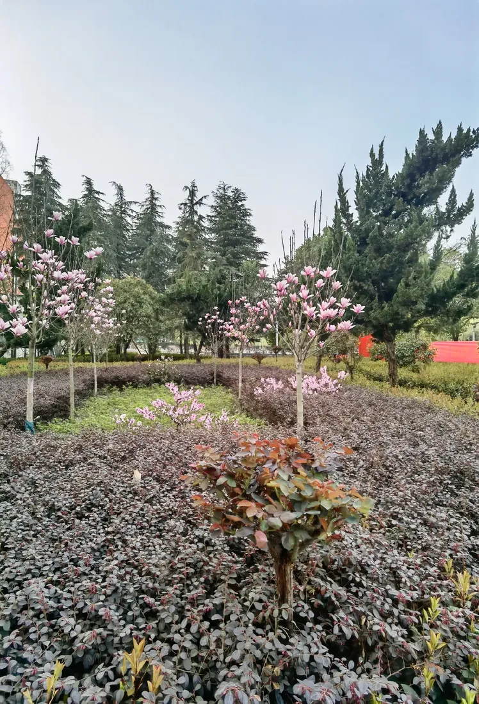
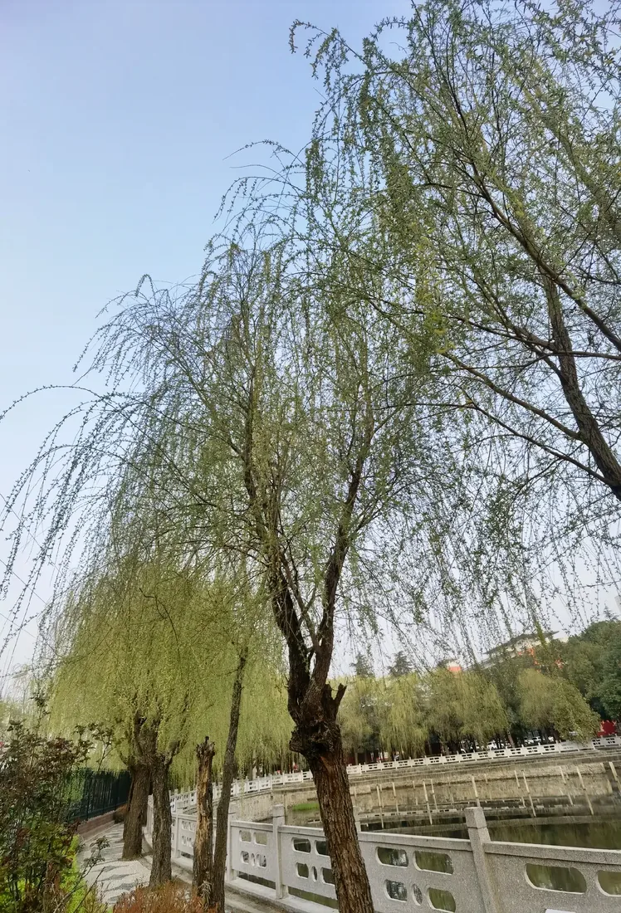
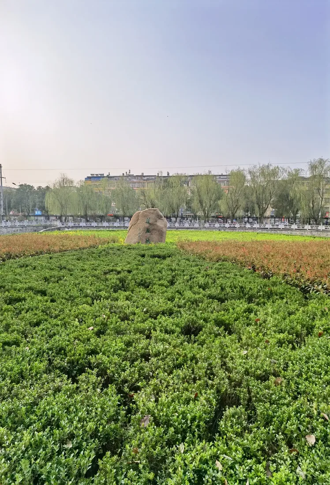
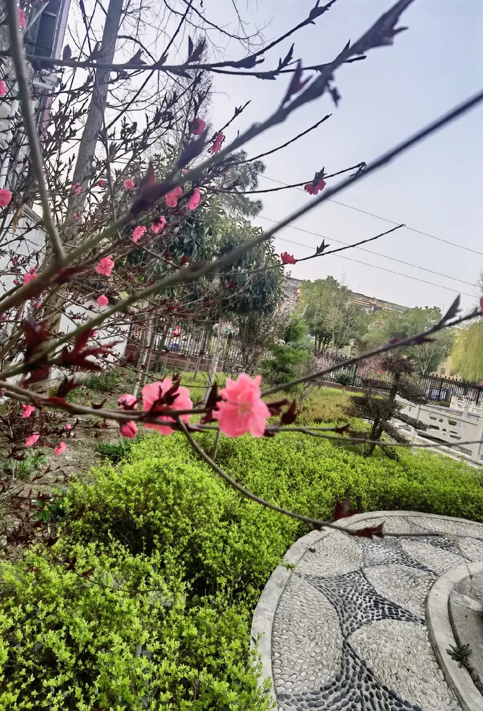
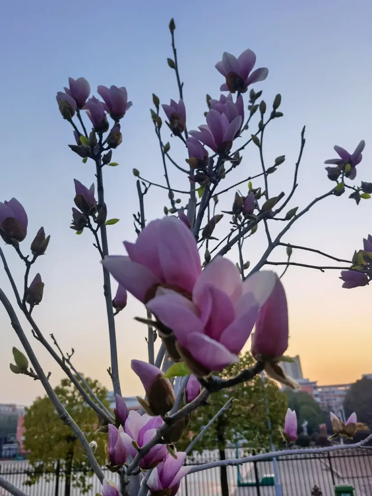
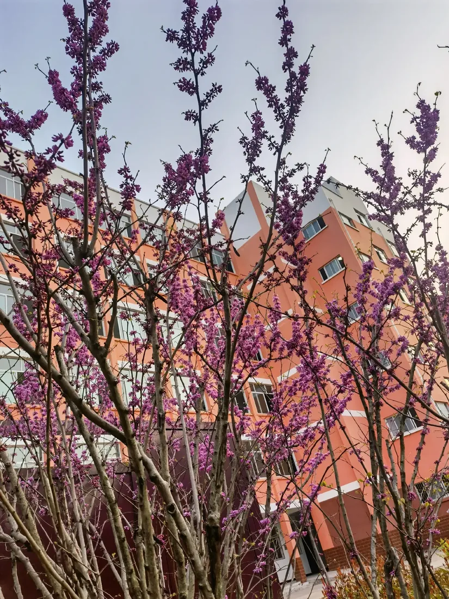
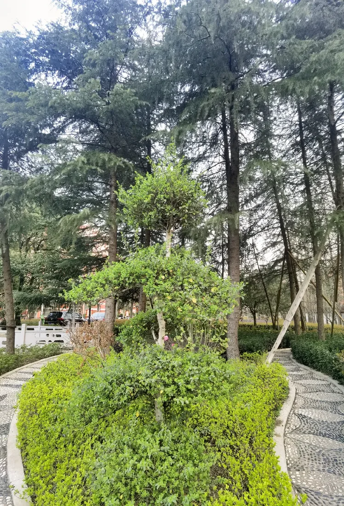
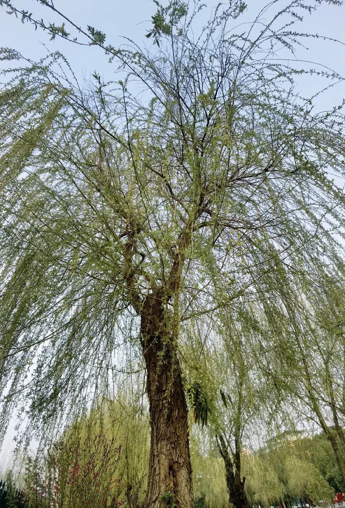
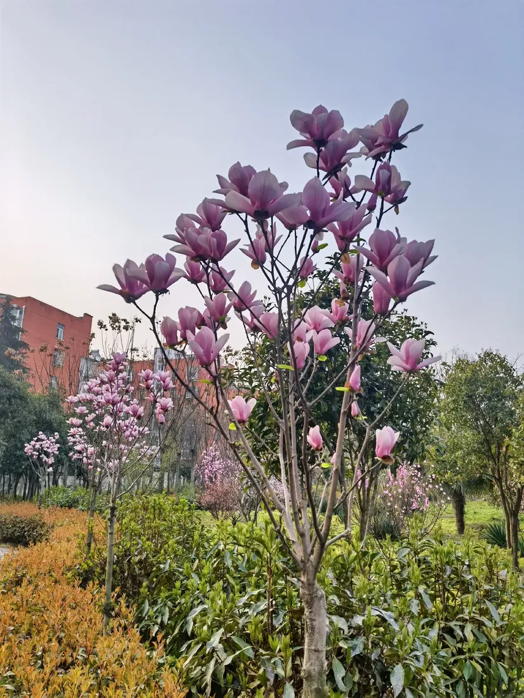
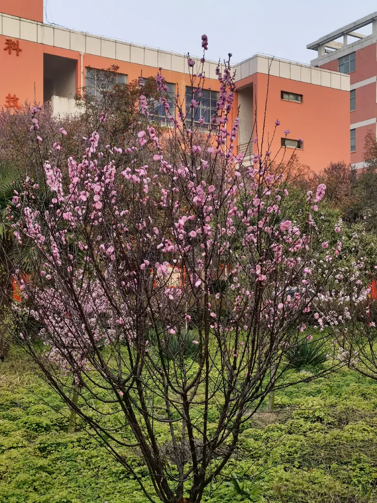
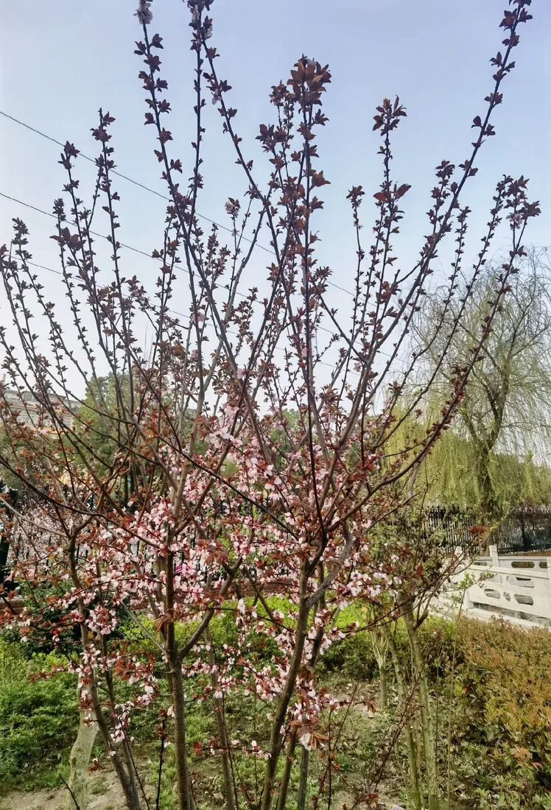
先从公开地图认识校园周边与部分校内地点。地图点位是社区地图资料，适合初步辨认；到校后请以校门口引导、校园标识和老师指引为准。
公开地图可见“教学楼”“开水房”“小食堂”等标注。它们帮助你熟悉校园生活的大致分区，实际名称、开放安排和位置以校内指引为准。
查看公开地图标注 ↗社区地图还标有篮球场等运动点位。新生入校后可以结合校园导引牌了解场地位置，并遵守学校对场地开放和活动时段的安排。
查看地图与周边地点 ↗公开地图及校园介绍中出现过这些景观点位。它们适合作为校园记忆的关键词；具体边界、通行路线及是否开放，请以学校现场信息为准。
查看公开地图标注 ↗只放可以追溯来源的基础信息。遇到地址、办学安排或招生政策等重要事项，请打开原始发布页面核对。
根据固始县政府公开资料，学校位于固始县城关镇王审知大道中段。本站引用的校训、地址和办学理念均附公开来源链接。
把入学前最容易遗漏的事列成清单。每年招生、报到和住宿安排可能变化，请以当年学校及教育部门的正式通知为准。
关注固始县教育体育局及招生考试服务中心发布的招生安排，按当年规定核对批次、时间、平台和录取信息。2026 年志愿填报通知只作往年参考，报名时段已经结束。
阅读 2026 年招生信息（往年参考）↗收到录取信息后，记下报到日期、地点、所需材料和联系人；同时核实住宿、校服、床品、缴费方式等安排。未在当年通知中确认的物品，不要照搬旧攻略购买。
查看固始县政府公示公告 ↗政府公开资料所列校址为固始县城关镇王审知大道中段 196 号。出发前在地图中搜索学校，并再核对录取/报到通知写明的校区、入口和集合地点。
打开高德地图导航 ↗校址来源：固始县人民政府公开资料。招生示例来源：固始县人民政府：2026 年普通高中招生志愿填报。本指南为学生整理的入门提示，不构成学校通知。
以下沿革根据百度百科词条整理为简要时间线；早期校史按词条所列阶段呈现，详细情况请以学校正式发布的校史资料为准。
固始县第一初级中学开始招收高中班，学校名称也随办学层次调整。
固始县高级中学校舍开始筹建；同年秋季，高中部迁入并正式建校。
学校被确定为信阳地区重点高中。
新校区建成并启用，学校曾以“固始慈济高级中学”等名称办学。
获评首批河南省示范性普通高中。
恢复“固始县高级中学”现名，并组建高中教育集团。
学校校训为“厚德、博学、明志、笃行”，办学理念为“尊重教育规律，以学生发展为本”。
百科词条介绍了名师讲坛、青蓝工程、校本课程、学生社团、阳光大课间及传统文化主题活动等校园生活。具体活动会随学年安排更新。
资料来源：百度百科：固始县高级中学、固始县人民政府公开资料。本站仅作摘要介绍；校史细节、办学安排如有差异，以学校最新官方资料为准。
以下链接跳转到原发布页面。本站仅做导航，不代替原文，也不把转载内容写成学校公告。
报道介绍了固始县高级中学师生代表前往秀水公园开展祭英烈活动。来源页面标注来源为固始县高级中学。
阅读原报道 ↗信阳市教育体育局专题刊载固始县高级中学校长张文友的办学文章，介绍学校发展思路与育人理念。
阅读市教体局原文 ↗固始县政府网站发布的考试报道。有关考试日程、考点和录取政策，请以教育部门最新通知为准。
查看政府原文 ↗以下作品来自抖音站内搜索结果。卡片只整理标题、作者和原链接，点击后在抖音查看。
这是学生个人搭建的非官方网站。本站信息用于同学交流与公开资料导航，不发布校方通知，不收集或展示未经同意的学生个人信息。